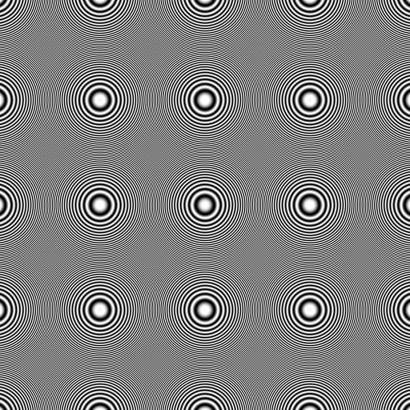
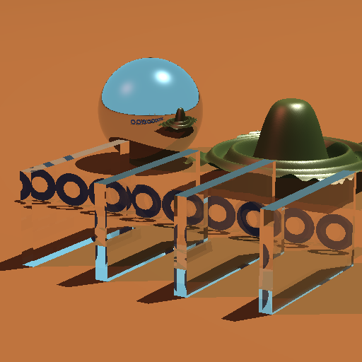
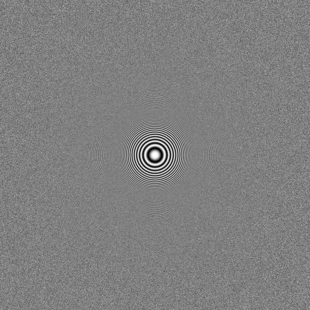
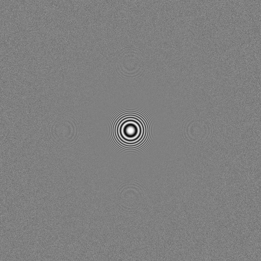
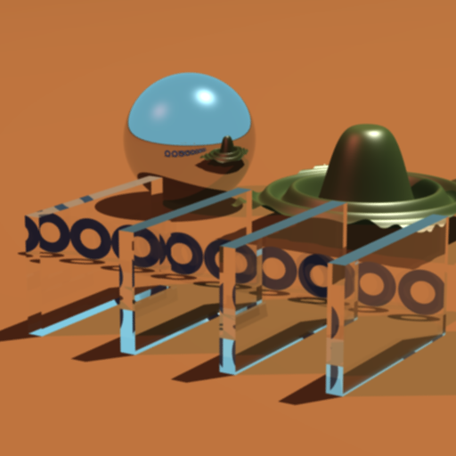

CS 6620
Assignment 5:
assigned images 1 and 2


No sampling or filtering done.
assigned images 3 and 4

Jittered Sampling at 9 samples per pixel using a Triangle Filter.[performance template of sine function img]
assigned images 5 and 6


Jittered Sampling at 9 samples per pixel using a Gaussian Filter.
Design Decisions:
So, for some reason, this assignment gave me a lot of
trouble. But, I finally got it working. I implemented some more classes to
handle the sampling and filtering:
- Filter
- BoxFilter:Filter
- TentFilter:Filter
- GaussianFilter:Filter
- Sample
- UniformSample:Sample
- JitteredSample:Sample
I added pointers to a Filter and Sample class in my
Scene class. Where I actually do the sampling and filtering and all that jazz
is actually in my Sample class. In my Sample class I have a method sample(x,y)
that samples and filters the pixel x,y of the image. I call that function from
my main rendering loop to get colors for each pixel. However, I think putting
that in the Sample classes wasn't a good move, because it really cause some
troubles when I wanted to use a filter that covered more than one pixel. For
now I just check to see if the support is > 1 and if so then I also sample the
pixels around it and add them to the cumulative sample, which isn't a very
slick way of doing it. Especially if I ever wanted to sample out beyond the
immediate surrounding pixels of the pixel being sampled, like for a filter with
support > 3, I would have to throw in another test and sample those pixels,
which isn't elegant at all...
What I was thinking of doing later on is move that sort
of sample-pixel function to the filter classes, because then the filter would
know how many samples it needs from the right number of pixels. Either that or
put it in my Scene class... For now I guess I better focus more on finishing
the rest of the assignments on time :).
To do the function images, I put in some #ifdef and
#define statements so that I can choose whether I want to trace the scene
defined or use the defined function values to render the image. It seemed a
good way to do it, and didn't take a long time to do.
I think the thing that I had the most problem with on
this assignment was getting the space conversions right. I had little errors
in converting from pixel space ([0,0]x[xres,yres]), to image space
([-1,-1]x[1,1]), to filter space (RxR). But I think I have it under control now...
[home]
:
[cs6620]
:
[uu]
:
[cs]
:
[sci]
:
[email]